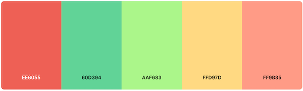
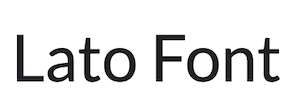

Color Scheme
I chose this color scheme because I wanted something bright and fun that reminded me of fresh produce. I also wanted in incorporate green colors into the scheme to connect the overall site to nature and natural foods. Studies have shown the bright colors are more "appetizing" to look at and make people more hungry
Typography
I chose the Caprasimo font for the headers and main titles. I thought it was easy to read while also being bold and fun. I chose the Lato font for all other types of text. It is professional looking and pairs well with the Caprasimo font as well.